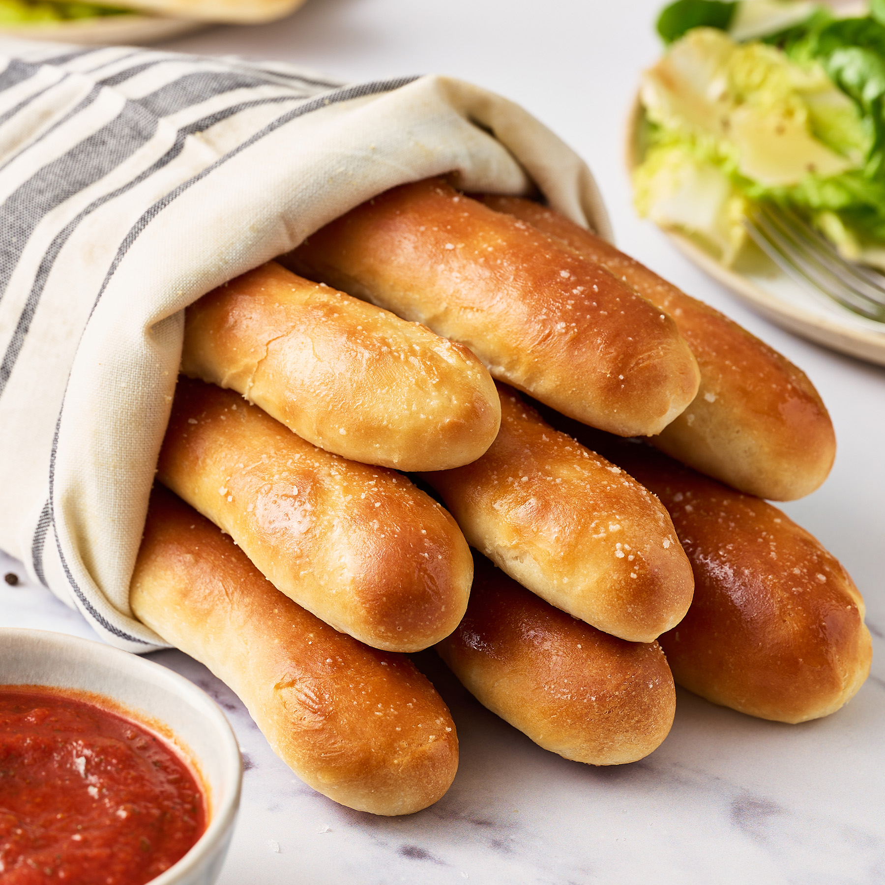

Olive Garden’s Alfredo Pasta with Breadsticks

Olive Garden’s Alfredo Pasta
Make Olive Garden’s Alfredo Sauce Recipe at home in just 20 minutes! Pair it with Fettuccine for an easy dinner idea the whole family will love!
Prep Time:
8 mins
Cook Time:
20 mins
Total Time:
28 mins
Servings:
5
PRO Tips For Making Olive Garden Alfredo Sauce:
- Olive Garden’s Alfredo Sauce recipe is made with Parmesan and Romano Cheeses, however you can also incorporate Mozzarella, Gruyere, Gouda, or Asiago. You can also just use Parmesan.
- You can use half and half instead of half heavy cream/half milk. If you only have evaporated milk, just use half the amount of milk and replace the other half with water. You won’t compromise flavor or consistency by doing this in creamy sauces like this one.
- You can even experiment with different pastas. I like fettuccine because the noodles soak up that thick sauce well, and Tortellini Alfredo with Broccoli is delicious as well!
Ingredients
- 6 Tablespoons salted butter, high quality
- 1 Tablespoon garlic, minced
- 2 Tablespoons all-purpose flour
- 1 ½ cups heavy cream
- 1 ½ cups whole milk, 1% or 2% can be used if needed
- ½ cup Parmesan cheese, grated and at room temperature
- ½ cup Romano cheese, grated and at room temperature
- Salt and black pepper, to taste
- 1 lb. Fettuccine
- Parsley, to garnish
Steps
- Boil the fettuccine according to package instructions. As the water preheats, begin the sauce.
- Melt the butter in a large saucepan over medium heat. Add the garlic and cook for one minute.
- Whisk in the flour and cook for 1 minute, stirring continuously.
- Add the heavy cream in splashes, stirring continuously. Add the milk in the same manner.
- Bring to a gentle bubble, then reduce heat to a simmer. It will continue to thicken as it simmers.
- Reduce heat to low and slowly stir in the cheese. Taste and season with salt/pepper if desired.
- Drain the pasta and combine it with the sauce until well incorporated. The pasta will absorb the sauce and it will continue to thicken.
- Garnish with parsley and serve!

Olive Garden’s Breadsticks
Craving warm, garlicky breadsticks? Recipes for the popular buttery, fluffy, and perfectly chewy breadsticks. There is only 7 ingredients. No complicated resting or rising periods. It’s about as simple as it gets.
Prep Time:
30 mins
Rising Time:
14 mins
Cook Time:
3 hrs
Total Time:
3hrs 44 mins
Servings:
12 breadstick
3 Tips for Perfect Breadsticks:
- Water: Be sure to use water that is not too hot. Hot water will kill the yeast and prevent the breadsticks from rising. 100-110°F is perfect.
- The Sugar: There’s a little in these breadsticks to help activate the yeast, tenderize the breadsticks, and make them a little softer. Don’t skip the sugar! I promise you won’t find the breadsticks sweet. Learn more about sugar’s role in baking here.
- Measure correctly: Be sure to measure your ingredients correctly. When measuring by volume (using cups), it can be super easy to accidentally over-measure ingredients, especially flour. I highly recommend using a digital kitchen scale, but if you don’t have one, use the spoon-and-level method.
Ingredients
For the dough
- 1 cup plus 2 tablespoons (250 grams) warm water, about 100-110°F*
- 1 ½ teaspoons instant yeast
- 2 tablespoons (25 grams) granulated sugar
- 3 tablespoons (42 grams) unsalted butter, melted
- 1 ¾ teaspoons fine sea salt
- 3 cups (381 grams) bread flour, plus more as needed!
For the topping
- 2 tablespoons (28 grams) unsalted butter, melted
- ½ teaspoon kosher salt
- ¼ teaspoon garlic powder
Steps
For the dough
- Prepare two baking sheets lined with parchment paper and set aside.
- In the bowl of a stand mixer fitted with a dough hook attachment, combine the water, yeast, sugar, melted butter, and salt. Begin to gradually add the flour while the mixer runs on low speed. Increase speed to medium and knead the dough for about 10-15 minutes, or until it is tacky and very elastic. Add more flour, a tablespoon at a time, if the dough is extremely sticky.
- Remove the dough and place in a lightly oiled bowl and cover with plastic wrap. Let rest in a warm place until doubled in size, about 1 hour to 1 ½ hours (the exact proof time will depend on your kitchen environment; the warmer it is, the faster your dough will proof).
- Once doubled in size, divide the dough into 12 portions (use your kitchen scale for accuracy, but it should be approximately 57 grams per piece). Roll each piece of dough into an 8-inch log. Place the dough logs on your parchment-lined baking sheet, about 2 inches apart. Cover, and let rise until doubled in size, about 1 hour to 1 1/2 hours.
- Preheat your oven to 400°F. Bake for 12 to 14 minutes, or until golden brown. Remove from oven and immediately brush with melted butter. Combine the salt and garlic powder and sprinkle evenly over breadsticks. Serve warm.
- To refresh, place the breadsticks on a baking sheet, and reheat in the oven at 425°F for 4-5 minutes, or until warmed through. You can also re-brush with butter and sprinkle again with garlic powder and salt, if you wish